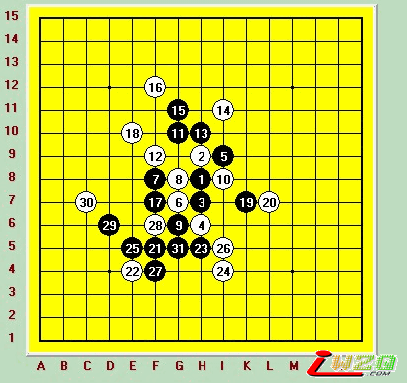
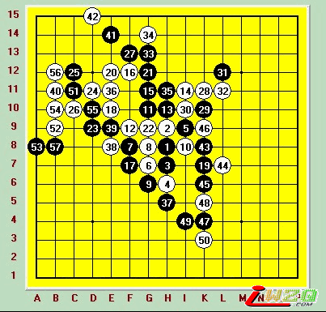
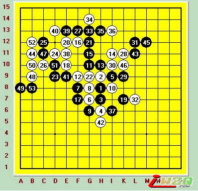
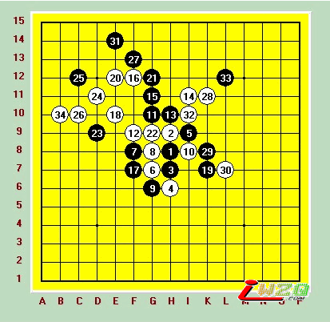

我自己拆的一个棋
#1 我自己拆的一个棋作者：有志青年 发表时间：2007-4-18 18:30:00
拆棋很多时候我都可以发现棋局里面有很多棋很有问题，这样就更加提高了自己得实战能力，最近我拆了好几个世界比赛的棋局，我发现了里面有很多的错误，很多人因为看见这样的错误而觉得自己很了不起，其实你们错了，一般在比赛的时候往往就是看看自己和对手到底是谁先失误的，如果你去参加比赛你一定会出现更多的失误，千万不要以为你可以和那些世界级的选手较量哦。
上面说的一些主要是关于对一些年轻轻狂的人的指导，现在我们进入我所拆棋的主题吧，首先是拆一个中村与KOZHIN MIKHAIL的松月局的比赛，中村执黑，前面的19手互相之间的争夺是相当的激烈，但是白子的20却错过了一个很好的先手机会，也可能是因为上面的胜利面感觉上自己觉得不是很大，而黑子下面有一个眠3，所以白方多少也是有点害怕，所以白子用了一个20把对方的3给锁死，黑21顺利外下面扩大自己的势力范围，虽然黑子现在还有一个活2，不过要是给黑子的势力范围进一步扩大的话，白子的情况就会更加糟糕，所以白22正面挡着21企图扩大的路线，黑23顺利的活出一个3，然后激活了23和19之间的那一条斜线，现在最重要的就是怎么用上这一条斜线的问题了。之后的这个24也无关紧要了，黑子马上就杀掉了对方。

下面大家再来看看我自己打出来的白20吧，这个虽然是杀得很精彩，可是我自己还真的步知道该怎么解说这一局棋，因为我自己对于五子棋的了解也不是很深厚，大家自己慢慢看看，领会一下吧。


#2 Re:我自己拆的一个棋作者：17号蓝星仔 发表时间：2007-4-18 21:59:20
真是太不好意思了,由于我的经验和棋力都不是很够,而我拆这个棋的时候的两个29都是黑石3段所选的点,虽然我都可以杀掉这两个点,但是刚才我再看了一下这个局 ,发现黑子好象还是死不了的有志注：将后两幅图打成互动谱，更方便阅读。
#3 Re:我自己拆的一个棋作者：江南新绿 发表时间：2007-4-18 22:03:57
多拆几遍就可以看到自己的错误了。加油，17号蓝星仔
#4 Re:我自己拆的一个棋作者：17号蓝星仔 发表时间：2007-4-18 22:04:32
发不了图片 就在这里说说吧 具体是黑29,31 K8 E14
【有志注：我来代发】
#5 Re:Re:我自己拆的一个棋作者：江南新绿 发表时间：2007-4-18 22:08:55
引用：看不懂说什么，但28之后黑棋可以用长连解33禁手。同时存在反三，这样就胜负逆手了。
原文由 17号蓝星仔 发表于 2007-4-18 22:04:32 :
发不了图片 就在这里说说吧 具体是黑29,31 K8 E14
#6 Re:我自己拆的一个棋作者：有志青年 发表时间：2007-4-18 22:20:45
江南对此对局也发了评论的
#7 Re:Re:我自己拆的一个棋作者：17号蓝星仔 发表时间：2007-4-18 22:34:40
引用：en 多谢 不过我发现自己还是拆得不太够好 我会加油的了 谢谢
原文由 江南新绿 发表于 2007-4-18 22:03:57 :多拆几遍就可以看到自己的错误了。加油，17号蓝星仔
#8 Re:Re:Re:我自己拆的一个棋作者：17号蓝星仔 发表时间：2007-4-18 22:40:24
引用：恩 所以我就觉得我自己后来发现了原来之前的两个29都是想错咯.现在回来修改
原文由 江南新绿 发表于 2007-4-18 22:08:55 :引用：看不懂说什么，但28之后黑棋可以用长连解33禁手。同时存在反三，这样就胜负逆手了。
原文由 17号蓝星仔 发表于 2007-4-18 22:04:32 :
发不了图片 就在这里说说吧 具体是黑29,31 K8 E14